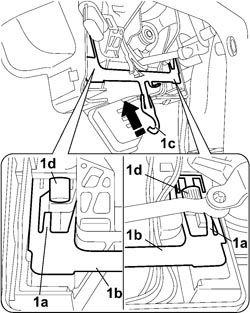
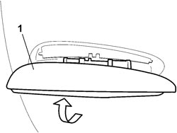
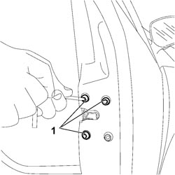
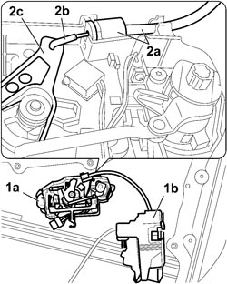
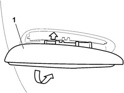
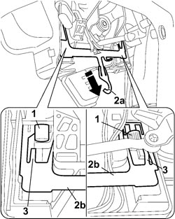

7005C12 FRONT SIDE DOOR OUTER HANDLE, (ONE) LH OR RH - R R WITH INNER SUPPORT FRAME TAKEN OFF
- Path
- Procedures > 70 FITTINGS > 7005 PASSENGER COMPARTMENT FRONT SIDE DOORS > 7005C FRONT DOOR LOCK CONTROLS > 7005C12 FRONT SIDE DOOR OUTER HANDLE, (ONE) LH OR RH - R R WITH INNER SUPPORT FRAME TAKEN OFF
- Kind
- repair procedure (removal / refitting; the operation number is the code)
- Applies to
- all engines; all production periods
- Interactive page
- https://sloeber94.github.io/elrnDB-fCrm/en/#/194000845
Applies to: engines: 1.8, 2.2, 1.9 JTD 8v, 1.9 JTD 16v; all production periods
 Removing
Removing
 Refitting
Refitting
Applies to: engines: 1.8, 2.2, 1.9 JTD 8v, 1.9 JTD 16v; all production periods
1. Extract the outer handle rotating it upwards.

Applies to: engines: 1.8, 2.2, 1.9 JTD 8v, 1.9 JTD 16v; all production periods
1. Undo the three bolts fixing the door locking actuator to the door frame.

Applies to: engines: 1.8, 2.2, 1.9 JTD 8v, 1.9 JTD 16v; all production periods
1. Remove the inner handle (1a) assembly from the door locking actuator (1b).
2. Release the end (2a) from the handle and disconnect the connecting rod (2b) from the lever (2c).

Applies to: engines: 1.8, 2.2, 1.9 JTD 8v, 1.9 JTD 16v; all production periods
Refitting
Removing- Connect the connecting rod and secure it to the inner handle.
- Place the door locking actuator in position and secure it using the fixing bolts.
- Position the inner handle against the door frame and keep it pressed.
1. With the help of a second mechanic, fit the outer handle in place starting from the top part, turning it downwards.

Applies to: engines: 1.8, 2.2, 1.9 JTD 8v, 1.9 JTD 16v; all production periods
1. When it is fitted, keep the outer handle pressed so that the securing pins are correctly inserted in the inner handle.
2. Secure the inner handle to the outer handle pulling downwards until the end (2a) of the joining plate (2b) is in the end of travel position.
3. Lower the safety tabs on both sides.

Topics that link to this page (6)
- 7005C11 FRONT SIDE DOOR EXTERIOR HANDLE - R.R
- 7005C15 FRONT SIDE DOOR LOCK BARREL (IN HANDLE) - R+R
- 7005C37 FRONT SIDE DOOR LOCK/BLOCK CONNECTION TIE ROD (ONE) LH OR RH - R R WITH INNER SUPPORT FRAME TAKEN OFF
- 7005C39 TIE ROD CONNECTING INNER OPENING INTERMEDIATE CONTROL TO FRONT SIDE DOOR LOCK (ONE), LH OR RH - R R WITH INNER SUPPORT FRAME TAKEN OFF
- 7005N20 FRONT SIDE DOOR LOCK MOTOR/CATCH ASSEMBLY, LEFT OR RIGHT - R.R WITH DOOR PANEL AND SUPPORT FRAME REMOVED
- 7205E36 STRIPPING FRONT SIDE DOOR